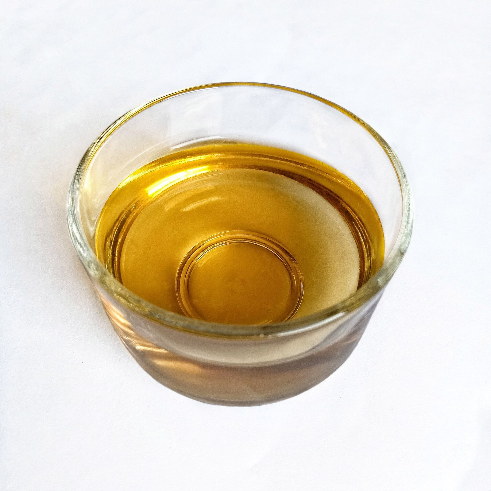
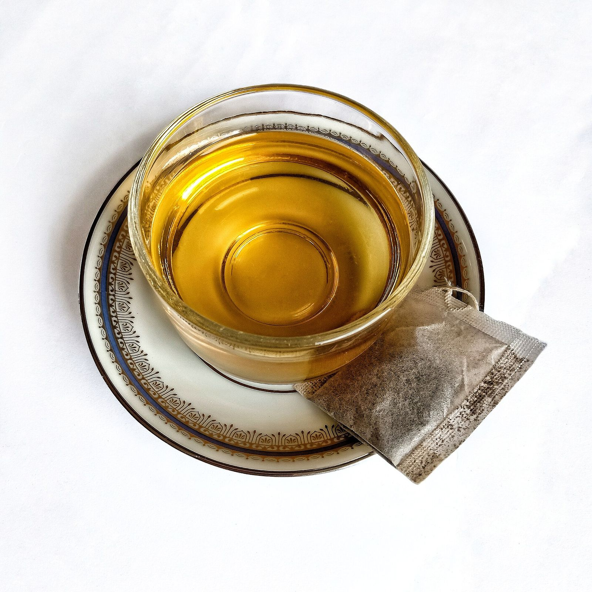
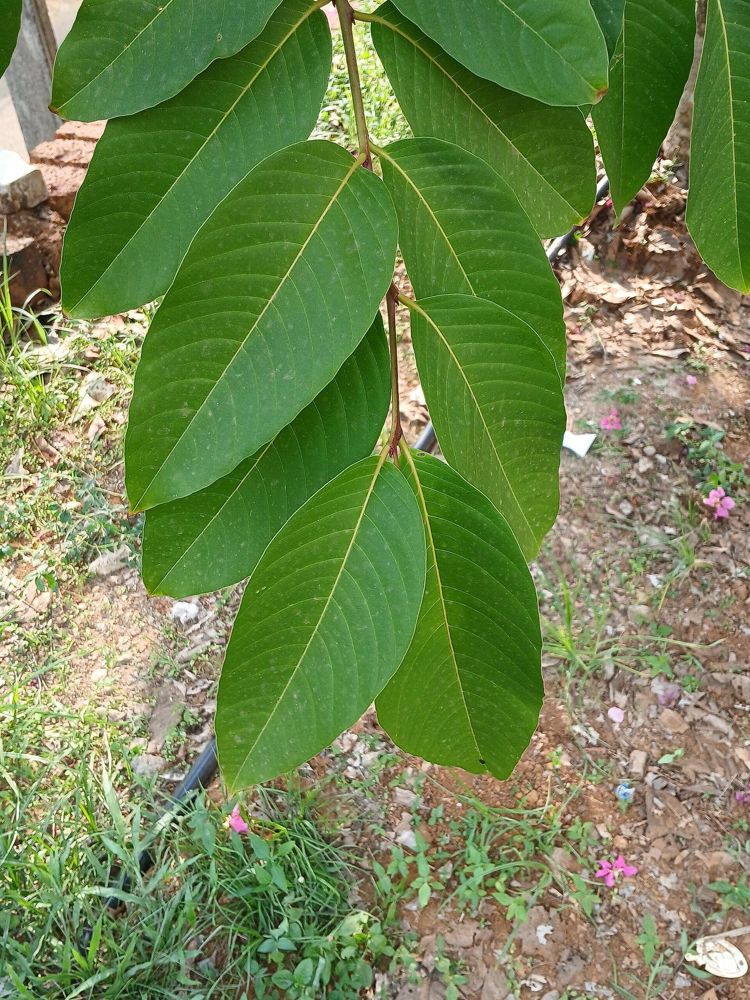
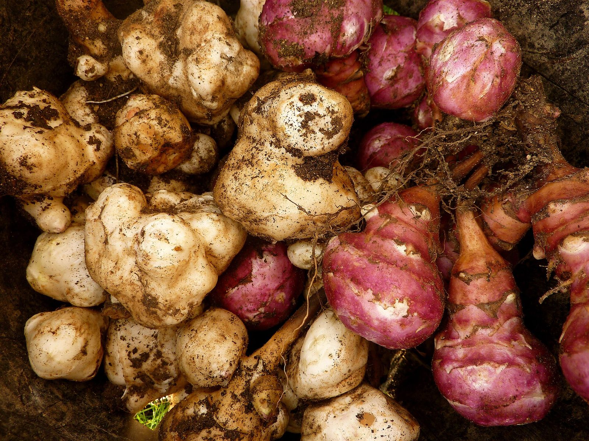
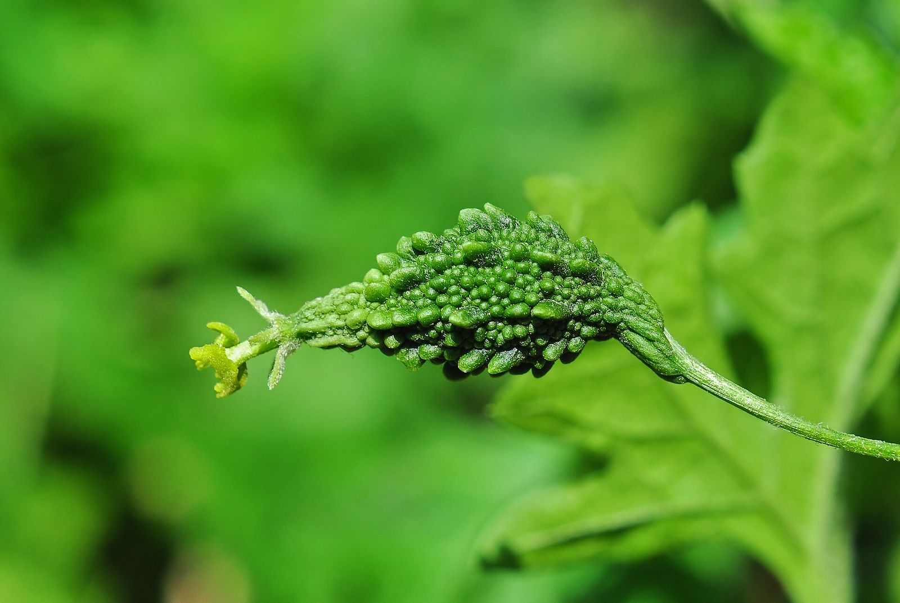
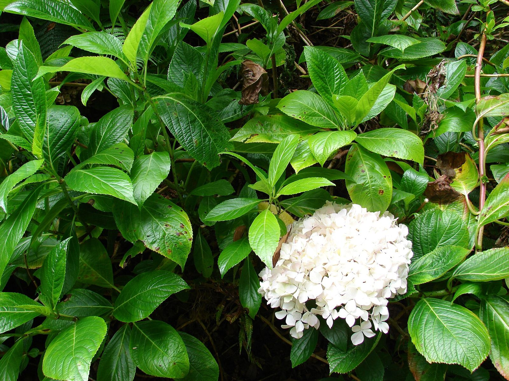

N°01일하는 날을 위한 방패차
일하는 하루,
세 번의 한 잔
아침 근무 전, 오후 근무 전, 그리고 잠들기 전.
하루의 시작과 고비, 마무리에 맞춘 원물 차예요.
Quick pick지금 가장 신경 쓰이는 건?

개선 ① 할인 문구 대신 ‘일하는 하루, 세 번의 한 잔’이라는 사용 장면을 첫 화면에 먼저 보여 줘요. 아침 근무 전·오후 근무 전·잠들기 전으로 마실 때를 정해, 숏폼 광고와 첫 화면이 같은 이야기를 하게 했어요.
N°02맞춤 케어레시피
요즘 가장 신경 쓰이는 건 무엇인가요?
하나만 고르면 지금 나에게 맞는 방패차를 알려 드려요.
개선 ② 원래 아래쪽에 있던 '맞춤 케어레시피'를 히어로 바로 아래로 올렸어요. 고민을 하나 고르면 맞는 차와 가격이 바로 나오고, 결과 배경이 그 차의 색으로 바뀌어요.
개선 ⑦ 광고 링크 끝에 고민을 붙이면(예: ?c=swell) 그 고민의 결과가 열린 채로 이 자리에서 시작해요. 붓기 광고를 보고 온 사람은 노랑이부터 보게 되고, 소재마다 퀴즈→상품 이동률을 따로 잴 수 있어요. 붓기 광고로 들어온 화면 보기
개선 ⑨ 퀴즈를 두 단계로 늘렸어요. 고민 다음에 '언제 마실지'를 고르면 내 루틴과 같이 마실 차를 보여 줘요. 고른 시간은 재구매 메시지의 발송 시간과 문구에 그대로 써요. 재구매 메시지 설계 보기
N°03방패차 3종 라인업
색으로 기억하고,
고민으로 고르세요
분홍이는 당당방패, 노랑이는 라인방패, 까망이는 버닝방패예요. 색 이름과 기능 이름을 늘 함께 적어요.
개선 ③ 색 이름(분홍이·노랑이·까망이)과 기능 이름(당당·라인·버닝방패)을 항상 함께 적었어요. 상품 목록과 세트 배너에서 다른 이름을 봐도 같은 제품이라는 걸 바로 알 수 있게 하려는 거예요.
알약이 아닌 차로,
관리가 아닌 습관으로.

N°04원물 이야기
한 잔에 담긴
네 가지 원물
당케어 방패차는 이 네 가지 원물을 한 잔에 담았어요.

바나바잎
Banaba leaf
필리핀 등 동남아시아에서 오래전부터 차로 우려 마셔 온 잎이에요.
효능 · 원료 기준추출물(지표 성분 코로솔산)이 식약처로부터 ‘식후 혈당 상승 억제에 도움을 줄 수 있음’ 기능성을 인정받았어요. 기준은 코로솔산 하루 0.45~1.3mg이에요.
출처 약사공론

돼지감자
Jerusalem artichoke
‘뚱딴지’라고도 부르는 국화과 뿌리채소예요. 구수한 맛을 더해요.
효능 · 원료 기준수용성 식이섬유 이눌린이 들어 있어요(지역·재배에 따라 함량 차이). 이눌린/치커리추출물은 식약처 고시형 원료로 ‘혈중 콜레스테롤 개선·식후 혈당 상승 억제·배변 활동 원활에 도움을 줄 수 있음’이 인정돼 있어요.
출처 농촌진흥청 · 식약처 기능성 원료 인정 현황

여주
Bitter melon
울퉁불퉁한 겉모양과 쌉싸름한 맛이 특징인 박과 열매예요.
효능 · 원료 기준덜 익은 여주의 주정추출분말이 식약처 개별인정을 받았어요. 기능성은 ‘식후 혈당 상승 억제에 도움을 줄 수 있음’, 기준은 하루 2.4g이에요.
출처 팜뉴스

수국잎
Hydrangea leaf
설탕 없이도 은은한 단맛이 나는 잎이에요.
효능 · 원료 기준잎에 든 필로둘신은 설탕보다 약 400~800배 단 천연 감미 성분이에요. 수국잎 열수추출물은 식약처 개별인정으로 ‘체지방 감소에 도움을 줄 수 있음’ 등의 기능성을 인정받았어요.
출처 Scientific Reports · 데일리안
원료 자체에 대한 식약처 인정과 연구 내용이에요. 기능성은 정해진 원료 형태와 섭취량을 기준으로 인정되는 것이라, 방패차 한 잔의 효과를 뜻하지는 않아요. 방패차는 일반 식품(침출차)이에요.
개선 ⑤ 원물마다 식약처 인정 문구와 연구 결과를 출처와 함께 적었어요. 원료 기준의 사실이라는 점과 방패차는 일반 식품이라는 점을 바로 아래에 밝혀, 효능을 제품 효과로 단정하지 않게 했어요. [확인 필요] 달빛숙솜의 카페인 여부는 제품 정보로 확인이 필요해요.
N°05하루 루틴
한 잔마다,
그때인 이유
아침 근무 전, 오후 근무 전, 잠들기 전. 시간마다 왜 그 차인지 연구로 알려진 사실을 출처와 함께 적었어요.
개선 ⑧ 2025년 약 35억 원에서 2026년 60억 원으로 가려면, 광고로 새 고객만 늘리는 방법은 광고비도 같이 커져요. 그래서 '언제 마실지'를 정해 주는 하루 루틴과 정기배송 자리를 메인에 두어 두 번째 구매를 늘리려는 거예요. 정기배송 할인율은 2~3안을 테스트해서 정해요.
N°06고객 후기
마셔 본 사람들의 15초
하루 중 언제, 어떻게 마시는지 고객의 루틴을 짧은 영상으로 보여 드려요.
개선 ④ 메인 위쪽에 후기 영상 자리를 만들었어요. 리뷰 이벤트로 모은 실제 고객 영상을 넣어서, 배지만으로 하던 설득에 사람이 직접 보여 주는 신뢰를 더하려는 거예요.
N°07NEW · 가볍게 시작하기
새로 나온 방패차와
첫 체험 상품
N°08SET · GIFT
세트로 골고루 마셔 보기
처음이라 고르기 어렵다면 세트로 시작해 보세요.
Plan개선 포인트 · 검증 계획
이 시안이 효과가 있는지 확인하는 방법
- 비교 방식기존 메인과 이 시안에 방문자를 절반씩 나눠 2주 동안 A/B 테스트
- 먼저 볼 지표퀴즈 참여율, 퀴즈 결과에서 상품으로 넘어간 비율
- 최종 지표첫 방문자의 첫 구매 전환율, 회원가입(쿠폰팩) 비율
- 광고와 연결메타·틱톡 숏폼 광고마다
?c=링크를 따로 달아, 소재별 퀴즈→상품 이동률과 첫 구매 전환율을 기존 메인 랜딩과 비교 - 재구매첫 구매 후 30일·60일 재구매율, 루틴 정기배송 신청률